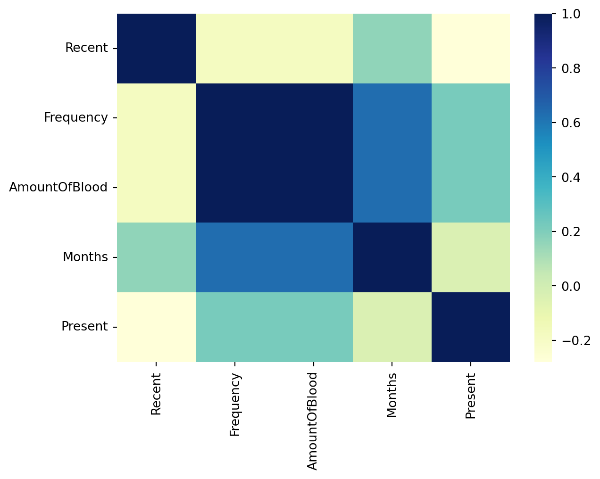
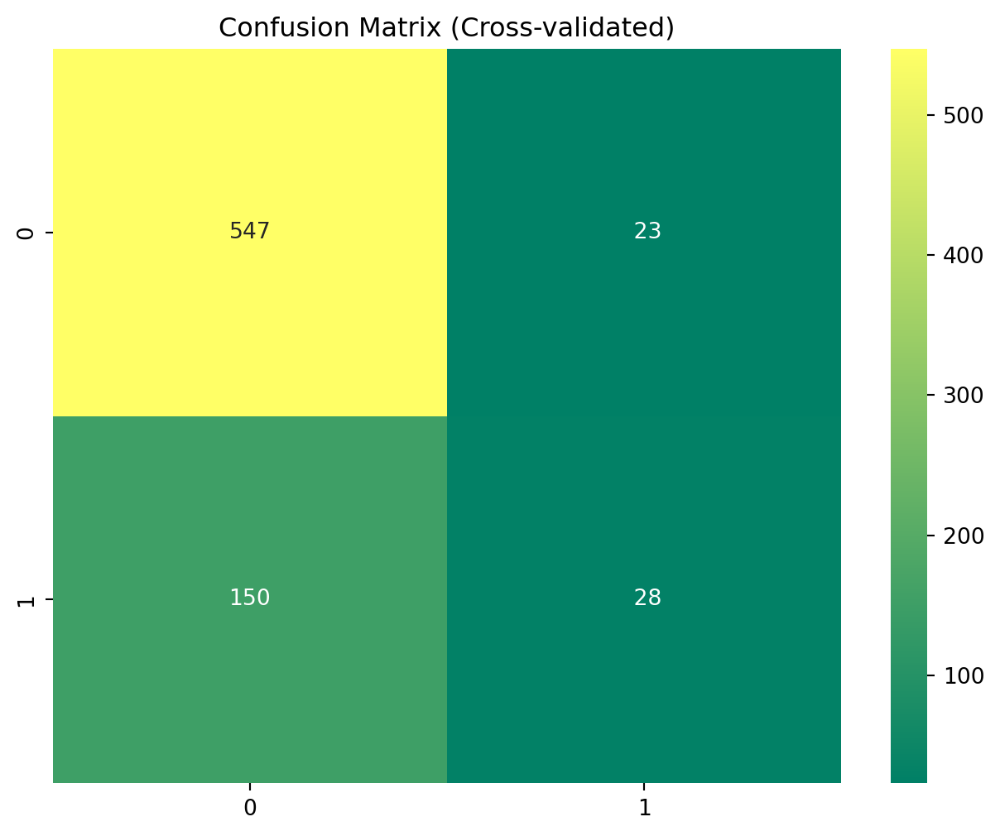

import pandas as pd
import seaborn as sns
from sklearn.metrics import precision_score, recall_score, f1_score, accuracy_score
from sklearn.model_selection import train_test_split
from sklearn.linear_model import LogisticRegression
from sklearn.metrics import confusion_matrix
import matplotlib.pyplot as plt
from sklearn.model_selection import cross_val_score, cross_val_predictClassification : The primary objective in supervised learning is to teach the model to predict the correct label or outcome for a given input. The model learns patterns and relationships in the training data, associating specific features with their corresponding labels.The training process involves exposing the model to the labeled training data, allowing it to adjust its internal parameters to make accurate predictions. Once trained, the model is then tested on new, unseen data (test data) to evaluate its generalization capabilities.The effectiveness of the supervised learning method is assessed by measuring its accuracy on the test data. Accuracy is calculated by comparing the model’s predictions with the actual labels in the test set. This provides insights into how well the model performs on previously unseen examples.

In supervised learning, where we already know the correct answers, there are two main flavors: classification and regression. The key factor in deciding which one to use is the nature of the label data. If your label data consists of continuous values, then it’s a regression task. Take predicting house prices as an example – here, the goal is to estimate a continuous value based on features like square footage, location, and the number of bedrooms.On the flip side, if your task involves predicting categorical outcomes, like whether a student will be accepted into a specific university or not, then it’s a classification problem. In this scenario, the label data has distinct categories (admitted or not admitted), making it suitable for a classification approach.So, whether you’re dealing with predicting prices or university admissions, understanding if your label data is continuous or categorical guides you in choosing between regression and classification for your supervised learning journey.
Eager Learners: Eager learners proactively build a model from a training dataset before making predictions. They invest more time during the training process to generalize better by learning the weights and relationships within the data. Once the model is trained, making predictions is relatively quicker. Examples: Logistic Regression: A widely-used algorithm for binary and multiclass classification. It models the probability of a certain class. Support Vector Machine (SVM): Efficiently classifies data points by finding the optimal hyperplane that separates different classes. Decision Trees: Tree-like models that make decisions based on features at each node, suitable for classification and regression. Artificial Neural Networks (ANN): Complex models inspired by the human brain, composed of interconnected nodes that process information in layers.
Lazy Learners (Instance-Based Learners): Characteristics:
Lazy learners don’t construct a model immediately; they memorize the training data. During prediction, they dynamically search for the nearest neighbor from the entire training dataset. This approach can be slower during prediction but adapts well to changes in the dataset. Examples:
K-Nearest Neighbor (KNN): Classifies data points based on the majority class of their k-nearest neighbors. Case-Based Reasoning: Makes predictions based on past cases, comparing the current problem to previously solved ones. Understanding these distinctions helps in choosing the right algorithm based on the characteristics of the dataset and the specific requirements of the problem at hand. Eager and lazy learners offer different trade-offs in terms of training time, prediction speed, and adaptability to changes in the dataset.

Types of Classifications : 1. Binary : 0/1, spam and not spam, yes and no, negative and positive. Example : (long) 2. Multi-class classification Example (one-vs-rest and one-vs-one) 3. Multi-label classification 4. Imbalanced classification
Let’s get to coding!
Classification takes place when the target variable is discrete. When a target variable isn’t discrete, then regression takes place for the continuous varible.
Types of classification in ML :
Let’s Start Coding

Let’s look at a Machine Learning code example that shows binary classification of Blood Transfusion Service Centre.
Before we start coding let’s download the data and understand it. Go to link : https://archive.ics.uci.edu/dataset/176/blood+transfusion+service+center and click on download. About Data : This study focuses on the critical role of blood transfusions in saving lives, addressing the challenges of maintaining an adequate blood supply for medical needs. The research employs the RFMTC marketing model, a modified version of RFM, using the donor database of the Blood Transfusion Service Center in Hsin-Chu City, Taiwan. The study randomly selects 748 donors and gathers data on Recency, Frequency, Monetary contribution, Time, and a binary variable indicating blood donation in March 2007. This dataset forms the basis for building an RFMTC model to enhance understanding and prediction in blood donation patterns.
Let’s start coding : 1. Import Libraries
- Read data and clean it
data = pd.read_csv(r"transfusion.csv")
# To rename the columns so that it is easier to call it
data=data.rename(columns={"whether he/she donated blood in March 2007":"Present"})
data=data.rename(columns={"Recency (months)":"Recent"})
data=data.rename(columns={"Frequency (times)":"Frequency"})
data=data.rename(columns={"Monetary (c.c. blood)":"AmountOfBlood"})
data=data.rename(columns={"Time (months)":"Months"})data.info()<class 'pandas.core.frame.DataFrame'>
RangeIndex: 748 entries, 0 to 747
Data columns (total 5 columns):
# Column Non-Null Count Dtype
--- ------ -------------- -----
0 Recent 748 non-null int64
1 Frequency 748 non-null int64
2 AmountOfBlood 748 non-null int64
3 Months 748 non-null int64
4 Present 748 non-null int64
dtypes: int64(5)
memory usage: 29.3 KBdata.describe()| Recent | Frequency | AmountOfBlood | Months | Present | |
|---|---|---|---|---|---|
| count | 748.000000 | 748.000000 | 748.000000 | 748.000000 | 748.000000 |
| mean | 9.506684 | 5.514706 | 1378.676471 | 34.282086 | 0.237968 |
| std | 8.095396 | 5.839307 | 1459.826781 | 24.376714 | 0.426124 |
| min | 0.000000 | 1.000000 | 250.000000 | 2.000000 | 0.000000 |
| 25% | 2.750000 | 2.000000 | 500.000000 | 16.000000 | 0.000000 |
| 50% | 7.000000 | 4.000000 | 1000.000000 | 28.000000 | 0.000000 |
| 75% | 14.000000 | 7.000000 | 1750.000000 | 50.000000 | 0.000000 |
| max | 74.000000 | 50.000000 | 12500.000000 | 98.000000 | 1.000000 |
- Visualization of the data
sns.heatmap(data.corr(),cmap="YlGnBu")<Axes: >
- Splitting data into train and test
#To define a variable 'features' that has all the columns except the boolean column 'Present'
features=data.drop("Present", axis=1)
#To define a variable 'target' that has the boolean column 'Present'
target = data["Present"]
X_train,X_test,Y_train,Y_test = train_test_split(features,target,test_size=0.3,random_state=101)- Model : Logistic Regression
#Using variable modelLR for logistic Regression
modelLR = LogisticRegression(solver='lbfgs')
#To fit this data of training set of X and Y to the model
modelLR.fit(X_train, Y_train)LogisticRegression()In a Jupyter environment, please rerun this cell to show the HTML representation or trust the notebook.
On GitHub, the HTML representation is unable to render, please try loading this page with nbviewer.org.
LogisticRegression()
- Evaluate the model
# modelLR = LogisticRegression()
predLR = modelLR.predict(X_test)
# Accuracy
acc = accuracy_score(Y_test, predLR)
print("Accuracy = {:.2f}".format(acc))
# Precision
precision = precision_score(Y_test, predLR)
print("Precision = {:.2f}".format(precision))
# Recall
recall = recall_score(Y_test, predLR)
print("Recall = {:.2f}".format(recall))
# F1-score
f1 = f1_score(Y_test, predLR)
print("F1 Score = {:.2f}".format(f1))
# Cross-validation
y_pred_cv = cross_val_predict(modelLR, features, target, cv=10)
# Cross-validation Accuracy
result_LR = cross_val_score(modelLR, features, target, cv=10, scoring="accuracy")
print("Cross val Score = {:.2f}".format(result_LR.mean()))
# Cross-validation Precision
precision_cv = precision_score(target, y_pred_cv)
print("Cross val Precision = {:.2f}".format(precision_cv))
# Cross-validation Recall
recall_cv = recall_score(target, y_pred_cv)
print("Cross val Recall = {:.2f}".format(recall_cv))
# Cross-validation F1-score
f1_cv = f1_score(target, y_pred_cv)
print("Cross val F1 Score = {:.2f}".format(f1_cv))
# Confusion Matrix
plt.figure(figsize=(8, 6))
sns.heatmap(confusion_matrix(target, y_pred_cv), cmap="summer", annot=True, fmt="3.0f")
plt.title("Confusion Matrix (Cross-validated)")
plt.show()Accuracy = 0.75
Precision = 0.50
Recall = 0.05
F1 Score = 0.10
Cross val Score = 0.77
Cross val Precision = 0.55
Cross val Recall = 0.16
Cross val F1 Score = 0.24